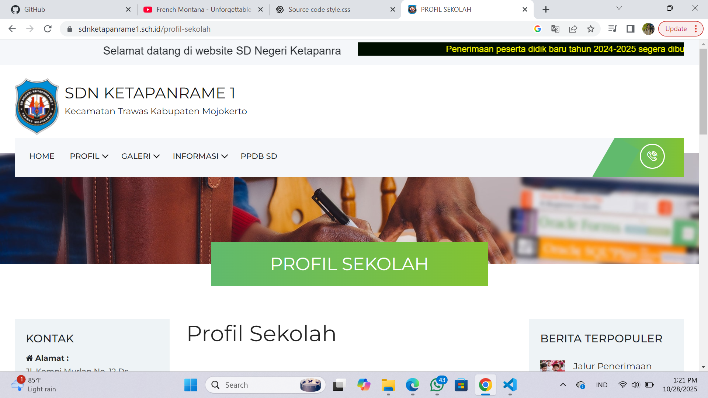
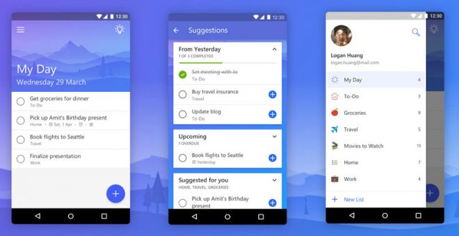
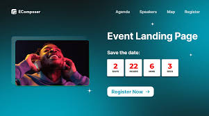

Website Profile Sekolah
Website statis responsif untuk profil sekolah, galeri, dan berita singkat.
HTML
CSS
Responsive
Kumpulan proyek hardcoded — klik "Lihat detail" untuk membuka modal.

Website statis responsif untuk profil sekolah, galeri, dan berita singkat.

CRUD ToDo dengan penyimpanan lokal (localStorage) — dasar JS untuk interaktivitas.

Landing page resp